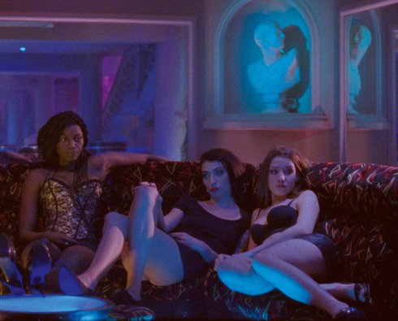

Filmmaker in focus: virgil vernier

Mercuriales
samstag 12 okt | 18.30 | werkstattkino
In Porte de Bagnolet, einem Vorort und sozialen Brennpunkt von Paris, lernen sich Joane und Lisa kennen. Sie begegnen sich zum ersten Mal in den sogenannten Mercuriales-Türmen, zwei Zwillingshochhäusern inmitten des Viertels, und merken schnell, was sie verbindet: die Suche nach mehr. Gemeinsam versuchen sie ihre Illusionen und Träume zu verwirklichen und scheitern dabei immer wieder an den Grenzen der gesellschaftlichen Realität.
Sophia Antipolis

samstag 12 okt | 21.00 | Filmmuseum
Poetisch, rätselhaft und verstörend geht es im Technologie-park Sophia Antipolis an der französischen Riviera zu. Ein junges Mädchen verschwindet, eine bewaffnete Bürgerwehr will für Sicherheit sorgen. Andere suchen in Sekten und in Schönheits-OPs neuen Sinn.
Sapphire Crystal

samstag 12 okt | 21.00 | Filmmuseum
Vernier zeigt sich als amüsierter Moralist und Beobachter der Leidenschaften, angesichts der Genfer Jeunesse dorée.
Virgil Vernier geb. 1976 in Paris. Studium der Philosophie und Kunst. Nach ersten Dokumentarfilmen begann er seine gefeierte Serie mit Filmen zwischen Dokument und Fiktion, deren dokumentarischer Gehalt nicht aus dieser Zeit oder von dieser Welt zu sein scheint. Wie unter einem Brennglas offenbaren sich die unheimlichen Merkwürdigkeiten der Welt als sozialkritisch verankerte Science Fiction, gefasst in die erhabene Schönheit des 16mm-Materials. |
| Filme Autoproduction 2009 | Commissariat 2009 | Thermidor 2009 | Pandore 2010 | Orléans 2012 | Mercuriales 2014 | Sophia Antipolis 2018 | Sapphire Crystal 2019
|